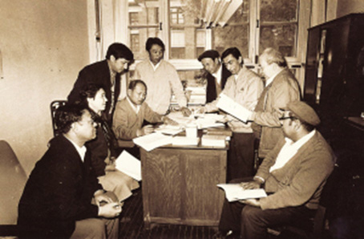

马列经典翻译：红色翻译的起点
2015年12月11日 来源：《中国民族报》

翻译局早期翻译人员工作照
恩格斯曾说过：“一个民族要站在科学的高峰，就一刻也不能没有理论思维。”民族要进步，没有理论建设不行。中国民族语文翻译局从建立以来，就把翻译马列经典、毛泽东著作，以及老一辈革命家的思想理论、党和国家领导人的著作作为工作重点，不断为全国各族人民提供思想法宝、理论指引。
上世纪70年代，在恢复筹建中央级民族语文翻译机构时，中国民族语文翻译局曾定名为“马克思恩格斯列宁斯大林著作、毛主席著作民族语文翻译局”，后更名为“中央马列著作毛泽东著作民族语文翻译局”，这也昭示了中国民族语文翻译局最初的和最重要的使命所在——马列经典及毛泽东著作的翻译。
中国民族语文翻译局蒙古语文室主任阿拉坦巴根记得，1982年他刚进入蒙古语文室工作时，当时有两个科室专门从事马列著作的翻译。蒙古文版的马列著作从汉文版翻译而来，而汉文版从德文或俄文翻译而来，这其中要经过3次转换，而且马列著作本身包罗万象，有哲学的、自然科学的、经济的，内容跨度大，这都给翻译工作带来了很多困难。
“但是，国家非常重视这项工作。我们蒙古文室组织精锐力量，还从内蒙古请来经验丰富的专家，同时参考了日文版等，最终才完成了翻译。”阿拉坦巴根介绍，那时蒙古文中还没有关于“阶级斗争”、“国家学说”这样的名词术语，因此首先要规范名词术语翻译。比如，“等价物”是个非常重要的基本概念，但是用蒙古文直译会很冗长，于是运用构词法的手段，添加后缀创造新词。
在这些大部头的翻译过程中，蒙古语文室的同志们先整理词条，用打字机录入，再手动油印，装订成册，有《常用词语》、《文章目录》、《<资本论>中引用的著作索引》等。“我们的初稿经过十几次修改，甚至看不出原样。前后经过20多道工序，这项工作才算完成。”阿拉坦巴根说。
蒙古语文室遇到的这些翻译困难，其他文室也都遇到了。壮语文室的译审关仕京认为，最难翻译的是《资本论》。一方面，这部政治经济学著作中的许多名词术语没有对应的壮文翻译。“比如说，‘剩余价值’这个名词，壮语里没有含有‘价值’之意的词语。我们就采用含有‘剩余’之意的壮语加上‘价值’的壮语音译来构词。”关仕京说，这样的情况很常见。
另一方面，《资本论》中有很多长句子，而壮语的特点是短句较多，所以翻译人员需要在准确把握句子含义的基础上，将长句拆成一个个短句。这中间，加什么样的虚词、关联词、副词，才能够符合原文，相当考验翻译的功力。
迄今为止，中国民族语文翻译局对马列经典著作的翻译是最全面、最系统的，改变了以前只有零星、局部章节翻译的状况。在民族地区的很多党校、高校，这些理论翻译著作作为教材，在当地理论建设、党政建设、干部教育等方面，发挥着十分重要的作用。